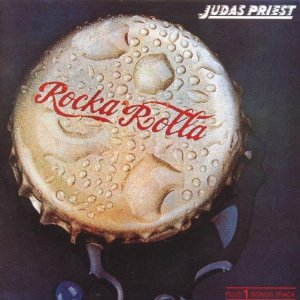
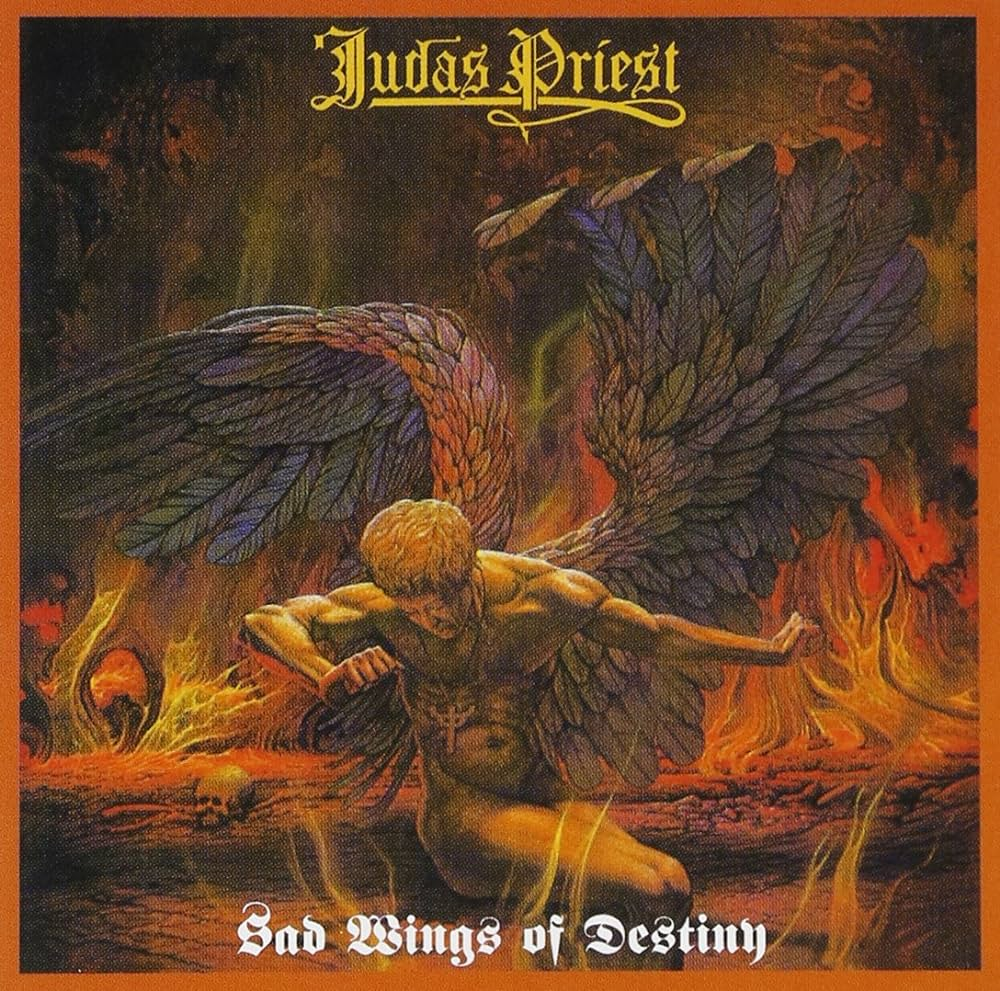
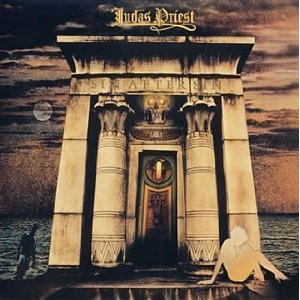
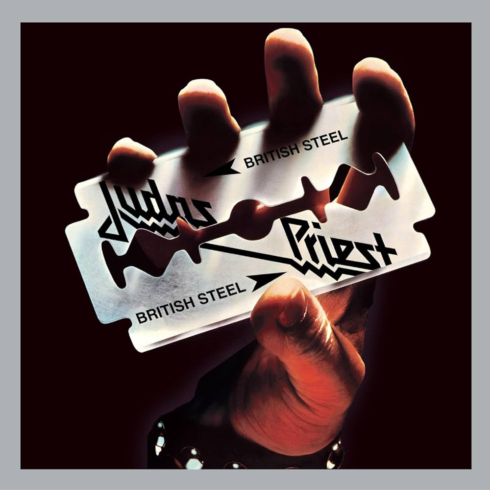
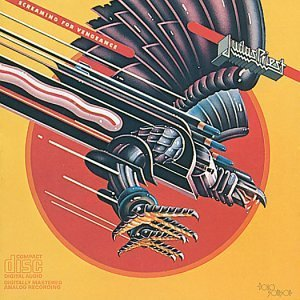
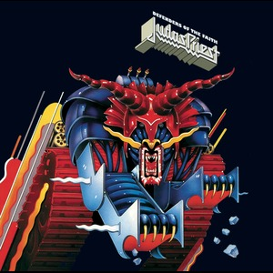

|
|
 |
 |
 |
O Judas Priest é uma das bandas mais icônicas e influentes da história do heavy metal. Formada em Birmingham, Inglaterra, em 1969, a banda teve um papel fundamental no desenvolvimento do gênero e na definição do som característico do metal britânico.
A história do Judas Priest remonta ao final dos anos 60, quando o guitarrista K.K. Downing e o baixista Ian Hill se juntaram para formar a banda. Logo depois, eles recrutaram o vocalista Al Atkins e o baterista John Ellis. No entanto, a formação da banda começou a se solidificar quando Rob Halford assumiu os vocais em 1973, trazendo uma voz poderosa e distintiva que se tornaria uma marca registrada da banda.
Com a formação completa, o Judas Priest começou a desenvolver seu som único, combinando riffs de guitarra pesados, solos virtuosos, vocais de alto alcance e letras que exploravam temas como rebelião, liberdade e fantasia. Seu primeiro álbum, "Rocka Rolla", foi lançado em 1974 e mostrou um som mais orientado para o rock progressivo.
|  |
Foi nos álbuns seguintes, como "Sad Wings of Destiny" (1976) e "Sin After Sin" (1977), que o Judas Priest começou a definir o som do heavy metal. Faixas como "Victim of Changes", "The Ripper" e "Sinner" mostraram a habilidade da banda em criar músicas poderosas e cativantes que ressoavam com os fãs de metal em todo o mundo.
|  |  |
Na década de 1980, o Judas Priest atingiu o estrelato com uma série de álbuns de sucesso, incluindo "British Steel" (1980), "Screaming for Vengeance" (1982) e "Defenders of the Faith" (1984). Esses álbuns apresentavam alguns dos maiores sucessos da banda, como "Breaking the Law", "Living After Midnight" e "You've Got Another Thing Comin'", solidificando o Judas Priest como uma das principais bandas de metal do mundo.
|  |  |  |
Além de sua música, o Judas Priest também é conhecido por sua imagem distintiva, com roupas de couro, tachas e correntes, que se tornaram símbolos do estilo metal. A banda também é creditada por popularizar o visual do "metalhead", influenciando gerações de músicos e fãs de metal em todo o mundo.